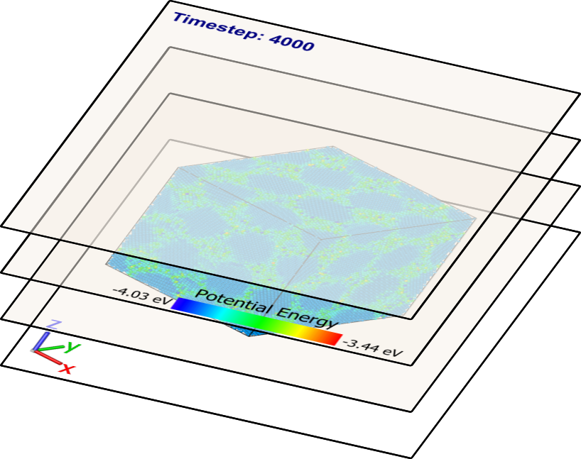

Viewport layers
{kind=link}
Viewport layers render two-dimensional text and graphics on top of the three-dimensional scene. They allow you to include additional information in output pictures and animations. OVITO provides several layer types (see table below), which you can add to a viewport. Go to the Viewport layers tab of OVITO’s command panel (screenshot on the right) to manage the layers of the active viewport.
Note that viewport layers are only visible in the interactive viewport windows while render preview mode is turned on for a viewport. OVITO activates the render preview mode automatically for the active viewport whenever you add a new layer.
{kind=link}
Available viewport layer types:
Layer type |
Description |
|---|---|
Shows a color map for a Color coding modifier or a typed property. |
|
Renders an axes tripod to indicate the view orientation |
|
Write your own overlay type in Python and draw arbitrary graphics and data plots on top of the 3d view |
|
Renders some text, which may be used to display dynamically computed quantities |
More viewport layer types have been contributed by the community and can be installed as extensions in OVITO Pro:
See also
ovito.vis.ViewportOverlay(Python API)Viewport.overlays(Python API)Viewport.underlays(Python API)